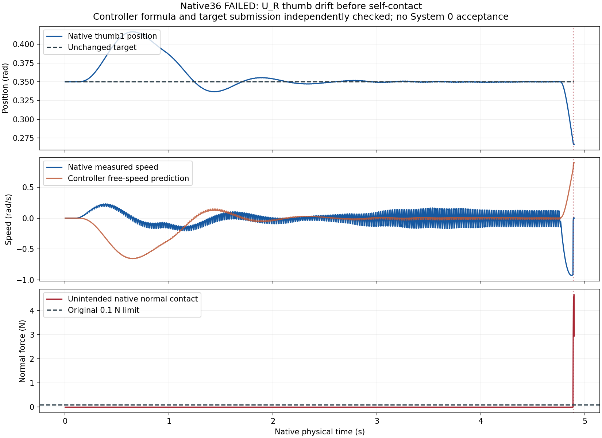
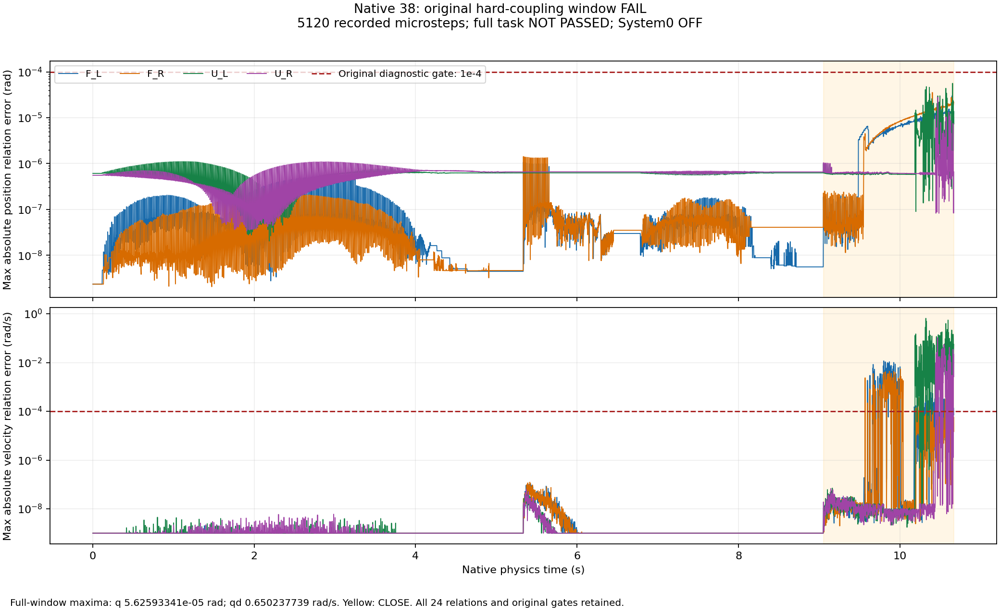
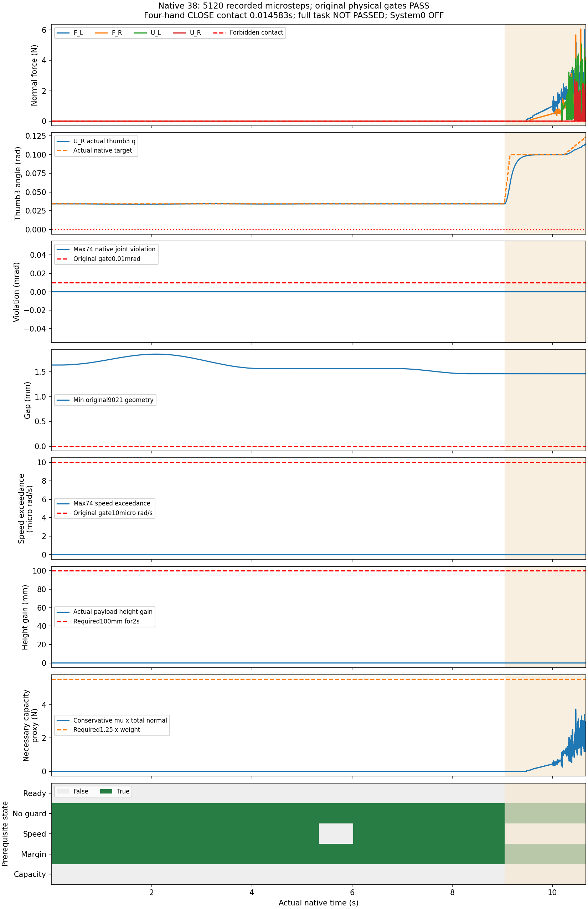

四臂全电机控制：修复自碰，受载联动仍未达标
V38完成640个控制周期、5120个物理步，本窗口的接触、几何、限位与速度门槛通过；原夹指速度联动误差仍达0.650237739rad/s，超过原0.0001阈值。四手共同接触仅0.01458275秒，没有达到完整夹持、100mm/2秒稳定抬升及后续任务要求，控制器未采用。
本页是同一已知输入上的开发诊断，使用实验场景：2 FR3 + 2 UR5。标准硬件资产场景尚未验收。学习策略与System 0均关闭；这里的控制器对照不能替代System 0开关配对实验，也不能证明未测试空间安全。
这次修了什么，尚未修好什么
V36的软件预测遗漏了场景中已存在的UR关节附加惯量0.05；右拇指偏离保持目标，在事件2346发生3.02887249N自碰，超过原0.1N门槛。V38只把实际读回的既有附加惯量计入控制预测，物理质量、惯量、限位、材料、目标、时钟和原验收阈值保持不变；相同窗口中这次自碰消失。逐步力矩、目标、原XML联动映射及参数核对通过，仍不能消除受载速度联动失败。
V35与此前V32的公共140个物理字段全部逐值相同，新增独立刚体角速度观测确认速度偏差是真实运动。V38最坏反例在第4953个物理步，左拇指第二/第三节远离限位，实际接触2.45943N；独立角速度核对确认原0.650237739rad/s违规，未用差分或阈值放宽替代它。



V35：环境恢复与真实速度复核
V36：全电机控制发生自碰
V38：修正既有附加惯量后，自碰消失，受载联动仍失败
原标准下的完整窗口结果
| 版本 | 控制/物理步 | 接触/几何/限位/速度 | 位置误差rad | 速度误差rad/s | 原联动模型 | 四手连续接触秒 | 完整任务 |
|---|---|---|---|---|---|---|---|
| V35 | 640 / 5120 | 本窗口通过 | 9.17762518e-05 | 0.289930493 | 失败 | 0 | 未通过 |
| V36 | 294 / 2352 | 失败 | 3.28570604e-06 | 0.000159390271 | 失败 | 0 | 未通过 |
| V38 | 640 / 5120 | 本窗口通过 | 5.62593341e-05 | 0.650237739 | 失败 | 0.01458275 | 未通过 |
每控制周期0.016666秒、8个物理步，手臂目标FIFO仍为6周期。视频末帧的显示停留不会增加物理测试时长。俯视、正视、侧视的操作阶段源几何视锥检查通过；遮挡及完整可视网格仍未验收。V36在靠拢时停止，不能声称覆盖夹持阶段视锥。
V36三项外层审计工具回执在传输中丢失，原记录保留NULL；没有伪造退出0或重跑覆盖失败。原生实验实际结束、原始数据完整性及失败门槛有独立记录。V33、V34资源/环境中止以及V40启动配置被拦截均不计入安全样本。
比较CSV · 完整数值与范围声明 · V38最坏受载反例 · 50电机逐步独立重算 · 73项原生参数不变及既有惯量读取
全部9项要求联合验收
完整四臂共同任务、感知与陈旧状态处理、原生危害判据、选择性暂停与恢复、有效运动、System 0同输入安全开关对照，以及机制冻结后的至少两批独立广域正式实验，必须联合通过。此前20,000个全50电机提案仍未运行其原生随机轨迹；其边际覆盖不能当作已验证的高维安全空间。
| 要求 | 状态 | 证据 | 待达标 |
|---|---|---|---|
| 回退保持在原始非零速度和延迟下持续安全 | DEVELOPMENT_LONG128_PASS_FORMAL_PENDING | 128条×480周期开发集保持通过；仍非有效操作，正式独立960周期未验收 | 独立冻结多种子与运行时未来安全/制动认证 |
| 保留操作意图并有实际四臂运动 | FAIL | v4安全123/128且四臂指令运动66/128；v5安全116/128且运动128/128。分层路径90%门槛仍失败 | 漏检碰撞和FIFO到达/未来保持；选择性暂停、恢复及任务完成 |
| 强随机、大范围操作空间与定向危害覆盖 | PARTIAL_CONDITIONAL_DEVELOPMENT | 20,000个新开发提案覆盖26臂关节+24独立手指电机，映射48手指坐标；16,000均匀+4,000边界，原74限位/24关系软件校验通过。未运行其原生轨迹，不能替代旧固定手指开发集 | 实际原生手指/全50电机联合随机轨迹、几何拒绝率、对象布局和故障分层；至少两批独立正式960周期 |
| 科学规范的冻结协议、独立多种子、留出与不确定性报告 | NOT_ACCEPTED | 当前全部为已知开发样本；正式独立留出验收0 | 候选修复后冻结至少两套独立新种子；保留所有失败，报告最坏种子 |
| 物体位置、姿态、大小、速度、可达性进入明确规划与安全输入 | FAIL | V38完整5120微步：原位置联动5.62593341e-5rad通过，速度0.650237739rad/s失败；48铰链速度与实际刚体角速度绑定6.54351022e-6rad/s，确认受载模型仍失败。原物理参数未改，标准资产未推广。 | 完整受载模型、真实感知与陈旧状态故障、活动烘焙形状认证、标准资产推广 |
| 真实物理夹持、抬升、搬运、放置和释放 | FAIL | V38完整640周期/5120微步本窗口物理通过；四手连续接触仅0.01458275秒，未满足0.25秒准入，未100mm/2秒抬升。V36原自碰失败完整保留。 | 完整真实夹持、100mm/2s抬升、搬运、放置、真实释放和撤离全部联合通过 |
| 真实四臂共同任务且有安全与不安全的同输入对照 | FAIL | 四手同梁真实摩擦记录完整；12秒CLOSE未满足抬升准备条件；System0与学习策略均关闭 | 完整协作成功及同输入System0开关配对 |
| 完整原生观测和独立危害判据，无漏测或单看画面 | PASS_RECORDED_BOUNDED_CASES_WITH_LIMITS | V35/36/38全部原生状态、实际目标、82点接触和9021球对公开；V38另含逐步完整质量矩阵、原附加惯量、科氏项观察及50电机输入力矩。V36三项外层审计回执NULL原样保留。 | 活动烘焙形状、延迟到达/负载预测、正式广域随机与视觉输入完整验收 |
| 网页可审阅的安全对照、完整视角和证据归档 | PARTIAL_SAFE_TASK_COMPARISON_NOT_ACCEPTED | V35/36/38各四路完整视频，俯视/正视/侧视/全景，原时序和全部原生物理步归档；任务及System0对照仍未通过。 | 真实成功四臂任务与学习System0同输入开关对照，正式随机留出与标准硬件资产验收 |